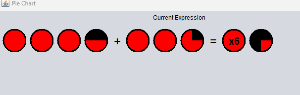
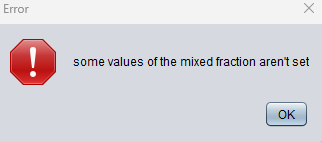
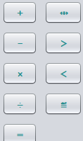
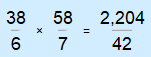

Looking at the header of Fragile, you'll see three different drop down menues to choose from. The first of them being the File drop down menu. By scrolling over the File drop down menu, you will be presented an Exit button. This button will close the program. An alternative way to close Fragile is by simply closing the window in the top right of the frame.
By hovering over the View dropdown menu.You will see the Pie Chart button. This button will allow you to view the result of your mixed fraction calculation in the form of a pie chart. Showing your whole numbers as full circles and your potential remaianing fraction as a percentage of the pie chart.

Here we have the main interface for the mixed fraction calculator. Like most calculators it features a numberpad made up of soft buttons, mathmatical operations and an "=" button. This calculator also features and additional button located on the bottom row. This is the Fraction / Focus change button.

Since this is a mixed fracton calculator we need a way to create these fractions. The way Fragile achives this is by allowing the user to change the focus on what number in the fraction they want to modify. As indicated by the rectangle in the viewing frame shown below.

Pressing the fraction button will move the rectangle to the numerator then the denominator then back to whole number position. Allowing the user to modify any given number as many times before deciding to perform a calculation.
To get started with performing a calculation, you must input the first mixed fraction you would like to be performed on. To achieve this, fill out the numerator and denominator using the focus feature mentioned previously.

This is an example of a valid input. If an invalid input is provided the user will be greeted with this error message.
Once a valid input is provided. Choose the mathmatical operation to be performed.
After the mathmatical operation has been selected. Input the second mixed fraction to be performed on. Repeat the first step of this process. After the second fraction has been input. Proceed to press the "=" button to evaluate the expression. The resulting expression will be presented as the image below.
The keyboard shortcuts listed below allow you to easily pick any menu item wihtout having to take your hand off the keyboard!